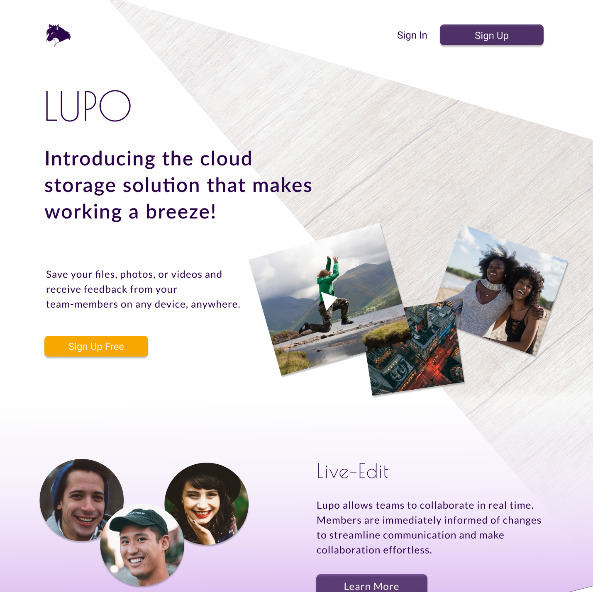
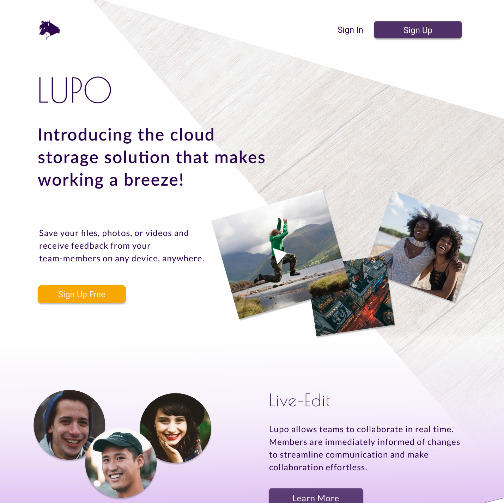

Through individuals like John and Kara, Lupo developed a purpose and overarching goals:
Create a brand that is trustworthy for work professionals
Provide an interface that is dynamic and vibrant while still maintaining a level of sophistication and professionalism
Extend and diversifycollaborative options for users while still having an intuitive and simple design
Be cost-efficient for individual users
Allow users to customize features and have more control over their cloud's organization to meet work needs


 
